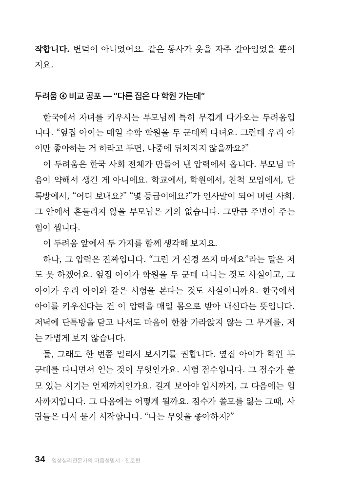
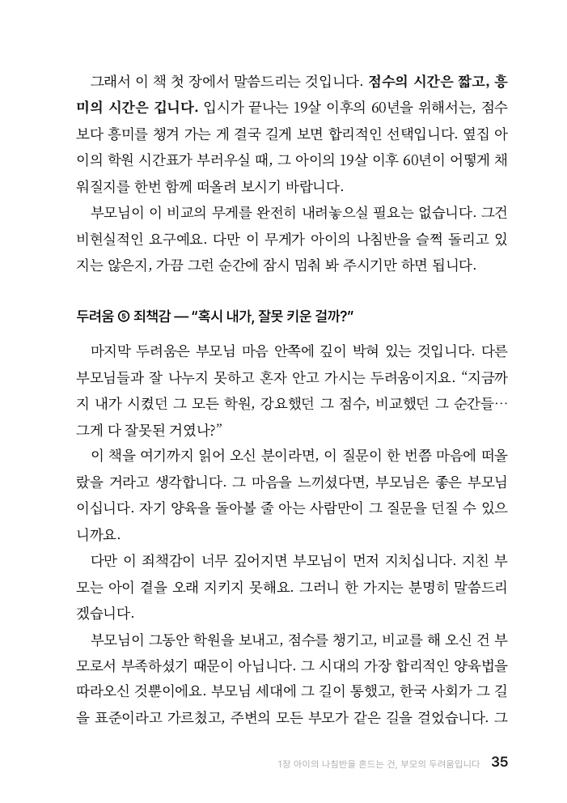

점수의 시간은 짧고,
흥미의 시간은 깁니다
비교가 불안해질 때, 입시 이후의 시간을 함께 생각합니다.
본문 34-35쪽
직업 명사는 옷이고,
동사는 몸이다
《AI 시대, 진로 방향 찾기》 본문 49쪽

아이에게 맞는 진로, 무엇부터 살펴야 할까요?


비교가 불안해질 때, 입시 이후의 시간을 함께 생각합니다.
본문 34-35쪽
좋아하는 것이 없다는 말 앞에서, 경험의 역할을 살펴봅니다.
본문 102-103쪽
 자기이해와 심리학
자기이해와 심리학
 삶과 가장 가까운 심리학
삶과 가장 가까운 심리학
 심리학 전문서와 교양서
심리학 전문서와 교양서